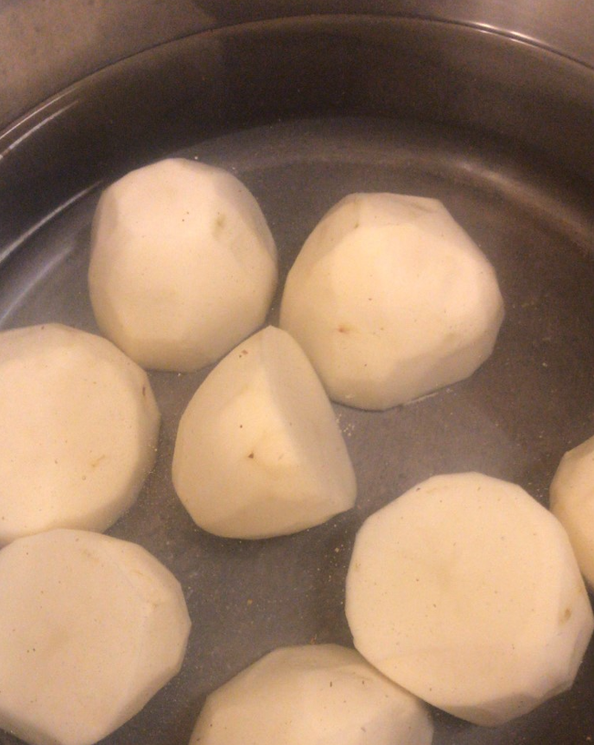
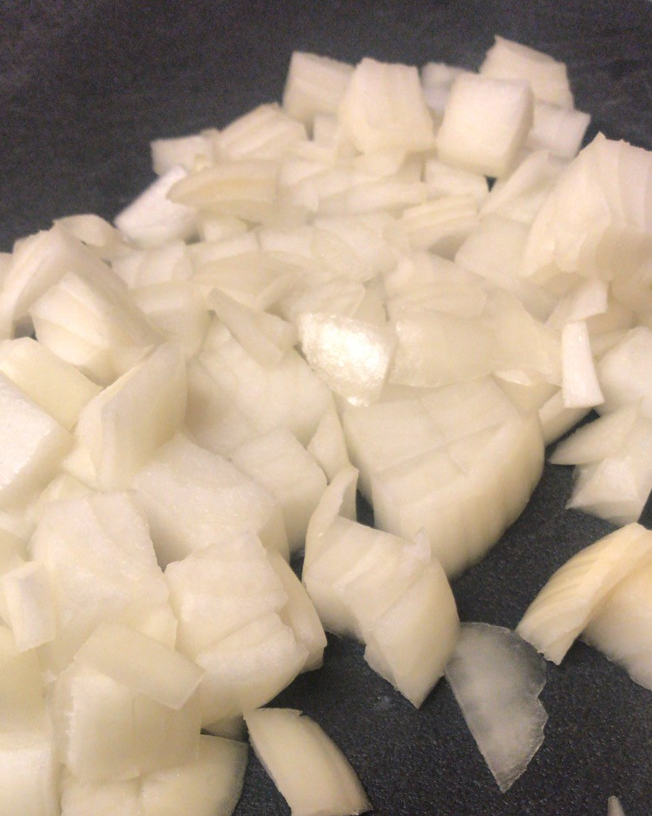
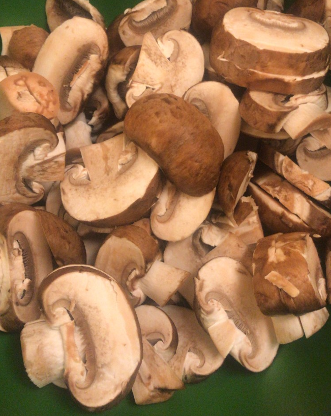
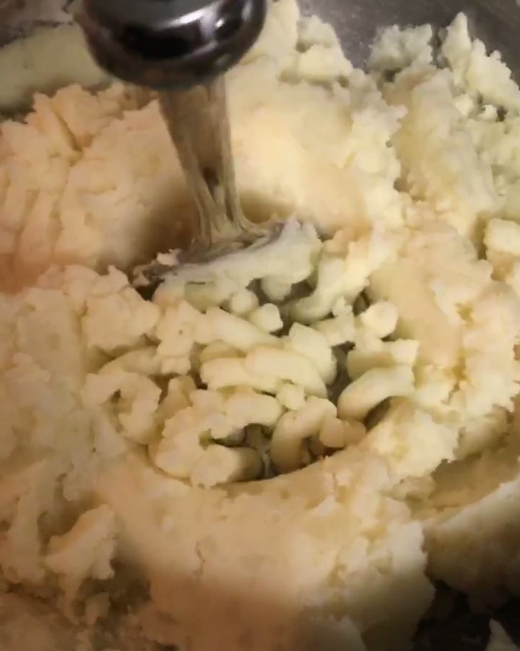
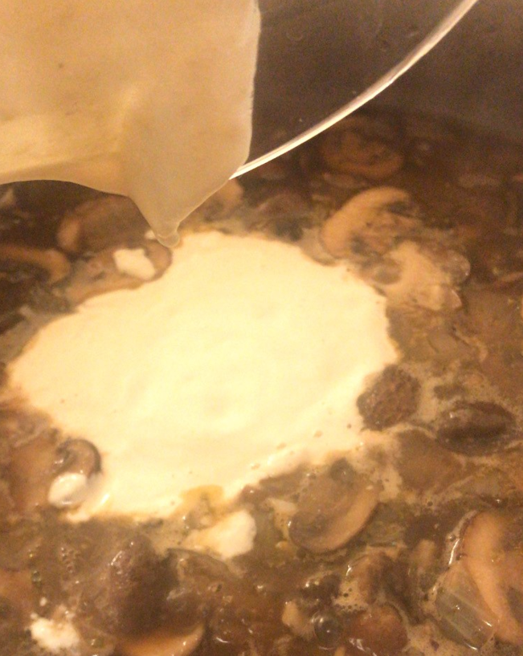

You will need:
- 3-4 Russet potatoes
- 1 white or yellow onion
- 1 package of cremini (baby bella) mushrooms
- 2 Tbsp. cooking oil
- Splash of red or white wine for deglazing
- 2.5 cups vegetable stock
- 1 Tbsp. Dijon mustard
- 1/2 teas. thyme (more or less to taste)
- 2 Tbsp. tapioca starch
- 1/4 cup cold water
- Non-dairy milk
- Non-dairy butter
- Non-dairy sour cream
- Salt and Pepper to taste
- Parsley (optional)
**PLEASE NOTE: all measurements are an approximation
|  | First, peel and halve potatoes and place in a pot of cold water. Bring water to boil on high heat and boil until soft. |
|  | Next, chop your onions. |
|  | Chop your mushrooms as well. |
 |
First add onions to a medium skillet and sauté in oil for 4 minutes. Then add your mushrooms. Cook until onions are translucent. |
 |
Deglaze the pan with red or white wine; then add vegetable stock, Dijon, and thyme. Simmer for 5-10 minutes. Make a slurry with cold water and tapioca starch and add to mixture in order to thicken. |
|  | By now your potatoes should be ready! Test for doneness with a butter knife, it should easily pierce the potato. Mash your potatoes with plenty of salt, along with your favorite (non-dariy) milk and butter. |
|  | Stroganoff just isn't stroganoff if it's not creamy... I made a cashew sour cream by blending cashews, water, salt, and lemon juice. You can also use store-bought, but be careful! Some brands will break apart like an overcooked hollandaise when you stir it in. |
Now it's time to plate! Add a generous amount of mashed potatoes to your plate, and top with your
stroganoff.
Top with freshly-ground black pepper, and some fresh parsley for color if you have it. Enjoy! |